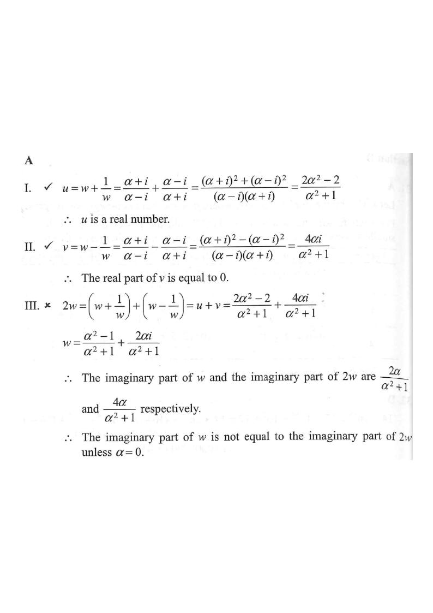

w (on unit circle)1/w (conjugate mirror)u = w + 1/wv = w − 1/w2w
HKDSE 2021 · P2 · Q35
Equations — Complex Numbers
Let $\alpha$ be a real number. Define
$w=\dfrac{\alpha+i}{\alpha-i}$,
$u=w+\dfrac{1}{w}$ and
$v=w-\dfrac{1}{w}$.
Which of the following must be true?
I. $u$ is a real number.
II. The real part of $v$ is equal to $0$.
III. The imaginary part of $w$ is equal to the imaginary part of $2w$.
A. I and II only
B. I and III only
C. II and III only
D. I, II and III

Figure (original exam diagram)
1 Set up $w$ — rationalise and find $\bar{w}$
Conjugate of a Quotient\(\overline{\left(\dfrac{a+bi}{a-bi}\right)}=\dfrac{a-bi}{a+bi}=\dfrac{1}{w}\)Since \(\alpha\) is real, conjugating \(w=\dfrac{\alpha+i}{\alpha-i}\) just swaps numerator and denominator.
Since $\alpha$ is real, $\overline{\alpha}= \alpha$ and $\overline{i}=-i$, hence
Multiplying numerator and denominator by the conjugate makes $\bar{w}=1/w$ obvious — this is the key to both I and II.
2 Check statement I: $u=w+\dfrac{1}{w}$
Sum of a Complex Number and its Conjugate\(z+\bar{z}=2\,\mathrm{Re}(z)\)With \(\dfrac{1}{w}=\bar{w}\), \(u=w+\bar{w}\) is twice the real part of \(w\), hence real.
Because $\dfrac{1}{w}=\bar{w}$,
$$u=w+\bar{w}=2\,\mathrm{Re}(w),$$
which is a real number (twice the real part of $w$).
Any $z+\bar z$ has zero imaginary part — "sum of conjugates is real".
3 Check statement II: $v=w-\dfrac{1}{w}$
Difference of a Complex Number and its Conjugate\(z-\bar{z}=2i\,\mathrm{Im}(z)\)Here \(v=w-\bar{w}=2i\,\mathrm{Im}(w)\) is purely imaginary, so its real part is \(0\).
Since $\dfrac{1}{w}=\bar{w}$,
$$v=w-\bar{w}=2i\,\mathrm{Im}(w),$$
which is purely imaginary, so its real part is $0$.
Multiplying by $2$ doubles both the real and the imaginary parts.
5 Check statement III
Comparing: $\mathrm{Im}(w)=\dfrac{2\alpha}{\alpha^2+1}$ but $\mathrm{Im}(2w)=\dfrac{4\alpha}{\alpha^2+1}$.
They are equal only when $\dfrac{2\alpha}{\alpha^2+1}=0$, i.e. only when $\alpha=0$ — not for every real $\alpha$ (e.g. $\alpha=1$ gives $\mathrm{Im}(w)=1$ but $\mathrm{Im}(2w)=2$).
Statement III is FALSE ✗
"Must be true" means true for every real $\alpha$. One counterexample kills it — and $\mathrm{Im}(kw)=k\,\mathrm{Im}(w)$ for real $k$, so III can never hold unless $\mathrm{Im}(w)=0$.
6 Conclusion
Only I and II must be true.
Answer: A (I and II only)
I ✓ · II ✓ · III ✗ (needs $\alpha=0$)
PRACTICESimilar question — try it yourself
Question. Let \(\alpha\) be a real number and let \(w=\dfrac{2\alpha+i}{2\alpha-i}\), \(u=w+\dfrac{1}{w}\), \(v=w-\dfrac{1}{w}\). Which of the following must be true? I. \(u\) is a real number. II. The real part of \(v\) is \(0\). III. The imaginary part of \(w\) equals the imaginary part of \(2w\).
Show the worked solution
Step 1. Conjugating, \(\bar{w}=\dfrac{2\alpha-i}{2\alpha+i}=\dfrac{1}{w}\), because \(2\alpha\) is real.
Step 2. I. \(u=w+\dfrac{1}{w}=w+\bar{w}=2\,\mathrm{Re}(w)\), which is real. So I is true.
Step 3. II. \(v=w-\dfrac{1}{w}=w-\bar{w}=2i\,\mathrm{Im}(w)\), which is purely imaginary, so its real part is \(0\). II is true.
Step 4. III. Rationalising, \(w=\dfrac{(2\alpha+i)^{2}}{4\alpha^{2}+1}=\dfrac{4\alpha^{2}-1}{4\alpha^{2}+1}+\dfrac{4\alpha}{4\alpha^{2}+1}i\), so \(\mathrm{Im}(w)=\dfrac{4\alpha}{4\alpha^{2}+1}\) but \(\mathrm{Im}(2w)=\dfrac{8\alpha}{4\alpha^{2}+1}\). They differ unless \(\alpha=0\) (e.g. \(\alpha=1\) gives \(\tfrac45\) and \(\tfrac85\)), so III is false.